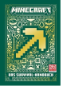

Offizielle Gaming-Handbucher fur Minecraft-Fans Wer auf seinen Erkundungstouren durch die Minecraft-Welt uberleben will braucht Mut, gute Ideen und vor allem die richtige Ausrustung! Das neue Survival-Handbuch zeigt dir die besten Tricks, um dich gegen Angreifer zu behaupten und bereitet dich auf alle Herausforderungen perfekt vor. Wo findest du besondere Ressourcen und uberlebenswichtige Hilfsmittel? Wie uberlistest du gefahrliche Monster? Hier findest du die Antworten, um jedes MINECRAFT-Abenteuer als Held zu bestehen. Die neusten Tipps und Tricks in einer hochwertigen Ausgabe. Von den offiziellen Machern von Minecraft.